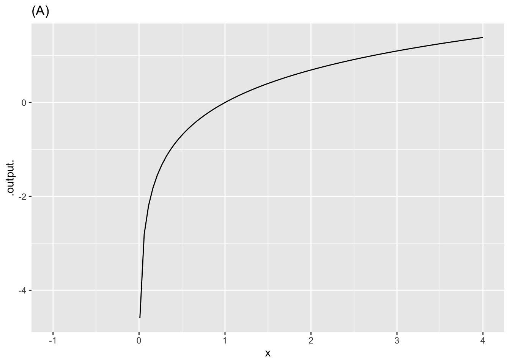
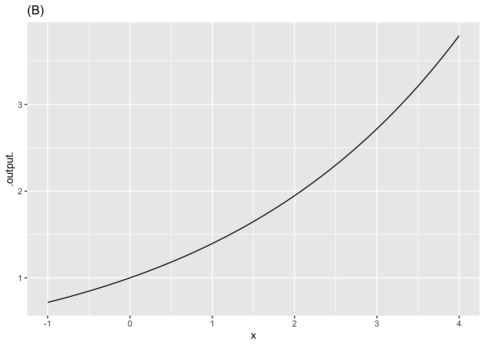
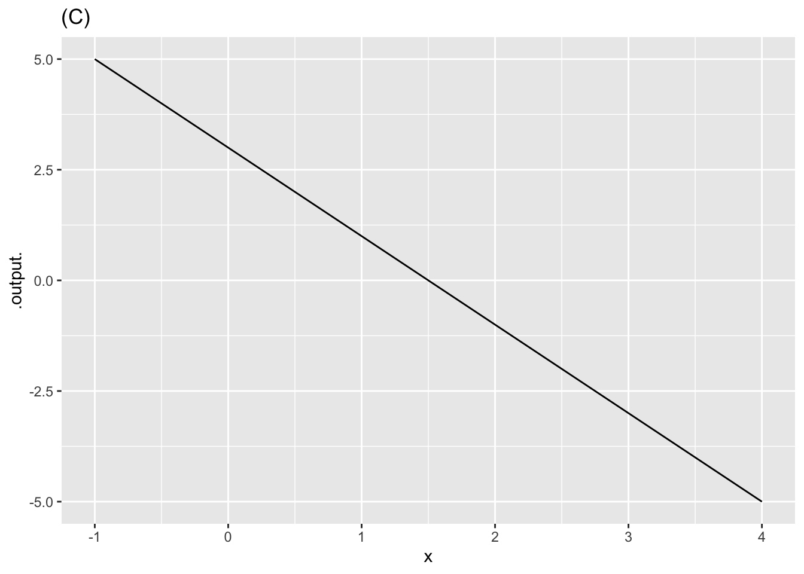

1 Exercises
1.1 Unassigned exercises
Need to split these up among the previous sections
The graph shows three different functions labeled (A), (B), and (C).

## This version of bslib is designed to work with shiny version 1.5.0.9007 or higher.Q-1: Function (A) is
concave down (+) []
non-concave []
concave up []
Q-2: Function (B) is
concave down []
non-concave []
concave up (+) []
Q-3: Function (C) is
concave down []
non-concave (+) []
concave up []
Q-4: The negative of function (A) is
concave down []
non-concave []
concave up (+) []
The graph shows a function \(\mbox{wave}(t) \equiv \sin(2 \pi t/4)\) and labels four input values \(t\).
Q-5: For what values of the input \(t\) is the function concave up?
\(t = A\) and \(t=D\) []
\(t = A\) and \(t=C\) []
\(t = C\) and \(t = D\) (+) []
none of the above []
Q-6: For what values of the input \(t\) is the function non-concave?
\(t = A\) (+) []
\(t=B\) []
\(t=C\) []
none of the above []
Q-7: Where is the function steepest?
\(t = A\) (+) []
\(t=B\) []
\(t=C\) []
\(t=D\) []
Here is a plot of the power output (BHP) versus displacement (in cc) of 39 internal combustion engines.
gf_point(BHP ~ displacement, data = Engines) %>%
gf_lims(y = c(0, 30000))
Q-8: Your study partner claims that the smallest engine in the data has a displacement of 2000 cc (that is, 2.0 liters) and 100 horsepower. Based only on the graph, is this claim plausible?
Yes, because 2000 cc and 100 hp would look like (0, 0) on the scale of this graph. (+) []
Yes, because that size engine is typical for a small car. [That may be, but certainly you’ve encountered lawn mower engines that are much smaller.]
No, the smallest engine is close to 0 cc. [Would you be able to distinguish visually an engine of 1 cc from an engine of 1000cc on this graph? Both these values would lie on the same horizontal pixel in the graph.]
No, my study partner is always wrong. [Be that as it may, we’re looking for a principled answer, not an ad hominem one.]
1.1.1 Semi-log scales
The next command will make a graph of the same engine data as before, but with a log scale on the horizontal axis. The vertical axis is still linear. (Just press run. You don’t need to change anything.)
gf_point(BHP ~ displacement, data = Engines) %>%
gf_refine(scale_x_log10())Q-9: Using just the graph, answer this question: The engines range over how many decades of displacement? (Remember, a decade is a factor of 10.)
7 decades (+) []
Can’t tell [Yes, you can. Figure out what one decade corresponds to in terms of distance on the log axes.]
\(10^7\) decades [The estimated volume of the entire universe is about \(4 \times 10^{86}\) cc. The volume of a neutron is about \(6 \times 10^{-81}\) cc. The range between a neutron and the universe is therefore about \(86 - -81 = 167\) decades. Do you think it likely that there is an internal combustion engine smaller than a neutron or larger than the universe?]
About 3.5 decades [Perhaps you’re treating the distance between axis labels as one decade. Look carefully and you see that it’s actually a factor of 100, that is, two decades.]
1.1.2 Log-log scales
In order to make a graph with log-log scales, we refine the graph with both scale_y_log10() and scale_x_log10(), as in the following …
gf_point(BHP ~ displacement, data = Engines) %>%
gf_refine(scale_x_log10(), scale_y_log10())
Based on the log-log plot, answer these questions.
Q-10: How many engines have a displacement of 1 liter or less?
none [Perhaps you recognized that the left-most tick mark corresponds to a value of 1, and that no data points are 1 or smaller. But one liter corresponds to 1000 cc.]
7 [This is the number of engines with displacement of 10 cc or smaller. But one liter corresponds to 1000 cc.]
14 (+) [Right. It’s the \(10^3\) tick that marks 1 liter, since 1 liter is 1000 cc.]
25 [That would be true if the cut-off were 10 liters. But it’s not.]
randomAnswerOrder [FALSE]
Q-11: Using the log-log plot, how many decades of BHP are spanned by the data?
4 [Not a bad answer, but not the best one either. Notice that the smallest engine is about half a decade below 1 BPM, and the largest is about half a decade above 10,000 BPH]
5 (+) []
100 [The number \(10^{100}\) is called a googol and is roughly how many particles (including photons, neutrinos, etc.) are in the universe. Imagine, quite contrary to fact, that 1 BHP could be generated by burning one molecule of fuel per second. Then as many fuel molecules as there are particles in the universe would have to be burned each second to power an engine at the high end of a span of 100 decades.]
These three expressions
\[e^{kt}\ \ \ \ \ 10^{t/d} \ \ \ \ \ 2^{t/h}\]
produce the same value if \(k\), \(d\) and \(h\) have corresponding numerical values.
The code sandbox below has an expression for plotting out \(2^{t/h}\) for \(-4 \leq t \leq 12\) where \(h = 4\). It also plots out \(e^{kt}\) and \(10^{t/d}\)
fa <- makeFun(2^(t/h) ~ t, h = 4)
fb <- makeFun(10^(t/d) ~ t, d = 10)
fc <- makeFun(exp(k*t) ~ t, k = 0.1)
slice_plot(fa(t) ~ t, domain(t = c(-4, 12))) %>%
slice_plot(fb(t) ~ t, color="blue") %>%
slice_plot(fc(t) ~ t, color = "red") %>%
gf_lims(y = c(0, 8))Your task is to modify the values of d and k such that all three curves lie on top of one another. (Leave h at the value 4.) You can find the appropriate values of d and k to accomplish this by any means you like, say, by using the algebra of exponents or by using trial and error. (Trial and error is a perfectly valid strategy regardless of what your high-school math teachers might have said about “guess and check.” The trick is to make each new guess systematically based on your previous ones and observation of how those previous ones performed.)
After you have found values of k and d that are suited to the task …
Essay question Q-12: Enter the numerical value of your best estimate of k.
Essay question Q-13: Enter the numerical value of your beat estimate of d.
1.2 Cooking with alcohol
The Wikipedia entry on “Common Misconceptions” used to contain this item:
Some cooks believe that food items cooked with wine or liquor will be non-alcoholic, because alcohol’s low boiling point causes it to evaporate quickly when heated. However, a study found that some of the alcohol remains: 25% after 1 hour of baking or simmering, and 10% after 2 hours.
The modeler’s go-to function type for events like the evaporation of alcohol is exponential: The amount of alcohol that evaporates would, under constant conditions (e.g. an oven’s heat), be proportional to the amount of alcohol that hasn’t yet evaporated.
Q-14: A) Assume that 25% of the alcohol remains after 1 hour? If the process were exponential, how much would remain after 2 hours?
10% [That’s what the study is reported to have found, but that’s not consistent with an exponential process that decays to 25% after one hour]
25% [Exponentials decay to zero eventually, so don’t expect things to stay still after one hour.]
25% of 25% (+) [We know that 75% is eliminated over 1 hour, leaving 25%. The continuing exponential process will, over the next hour eliminate 75% of the amount at the start of that hour. So after hour 2 we’ll have 25% of the amount we had at hour 1, which was 25% of the original amount.]
75% [That’s how much was eliminated in the first hour, not how much remains after 2 hours.]
75% of 75% [In an exponential process, at any moment the rate of decay (e.g. 75% per hour) is a constant proportion of the amount that is still there. After one hour, there is 25% of the alcohol remaining. That will decay at a rate of 75% per hour. Over the next hour, we’ll lose 75% of the original 25%, giving us 25% of the original amount.]
Q-15: B) What is the half-life of an exponential process that decays to 25% after one hour?
15 minutes [This provides time for four halvings in one hour, which would leave \(\frac{1}{2} \times \frac{1}{2} \times \frac{1}{2} \times \frac{1}{2} = 1/16\) of the original not 1/4.]
30 minutes (+) [This gives time for two halvings in one hour, bringing us to 25% as observed.]
45 minutes [Two halvings bring us down to 25%. At this rate, it would take 90 minutes to get down to 25%, not 60 minutes as observed.]
none of the above []
Let’s change pace and think about the “10% after 2 hours” observation. First, recall that the amount left after \(n\) halvings is \(\mbox{amount_left}(n) \equiv \frac{1}{2}^n\) This is an exponential function with base 1/2.
You’re going to carry out a guess-and-check procedure to find a zero of the function \(\text{amount_left}(n) - 0.10\) that is, you’ll find what \(n\) will generate the stated output value (e.g. 10%).
Open a sandbox and copy over the scaffolding, which include the definition of the amount_left() function. and a “guess” for the input. Change the guess until you get the output 10%.
::: {.scaffolding}
amount_left <- makeFun((1/2)^n ~ n)
amount_left(0)## [1] 1Q-16: C) Use amount_left() to figure out how many halvings it takes to bring something down to 10% of the original amount.
2.58 []
3.32 (+) []
3.62 []
3.94 []
4.12 []
Another way to find the input \(n\) that generates an output of 10% is to construct the inverse function to \(\text{amount_left}()\).
The computer already provides you with inverse functions for \(2^n\) and \(e^n\) and \(10^n\). Their names are log2(), log(), and log10() repectively. Using log2(), write a function named log_half() that gives the inverse function to \((1/2)^n\). Remember, the input to the inverse function corresponds to 10%; the output to the \(n\).
Q-17: The answer you got in part C) is the number of halvings needed to reach 10%. If this number occurs in 2 hours (that is, 120 minutes), what is the half life stated in minutes.
30 []
35 []
36 (+) []
38 []
42 []
47 []
Suppose you compromise between the half-life needed to reach 25% after one hour and the half-life needed to reach 10% after two hours. Use, say, 33 minutes as the compromise half life. Using the sandbox below, calculate how much would be left after 1 hour for this compromise half life, and how much left after 2 hours.
Q-18: How much is left after 1 hour and after 2 hours when the half life is 33 minutes?
28% and 8% (+) []
31% and 4% []
30% and 9% []
27% and 9% []

Q-19: Consider the axis scales shown above. Which kind of scale is the horizontal axis?
linear (+) [You can see this because a given length along the axis corresponds to the same arithmetic difference regardless of where you are on the axis. the distance between 0 and 50 is exactly the same as the difference between 50 and 100, or the distance between 150 and 200.]
logarithmic [A clue that an axis is not logarithmic is that there is a zero marked. The log of zero is \(-\infty\), which can’t appear on any actual graph. Another key is whether the scale shows doubling behavior. The distance between 50 and 100 represents one doubling: 100 is twice 50. If the scale were logarithmic, moving forward that same distance from 100 would bring you to 200. But that’s not what happens here.]
semi-logarithmic [“Semi-logarithmic” is not about a single axis but about two axes: horizontal and vertical. It means that one axis is linear while the other is logarithmic.]
log-log [“Log-log” is not about a single axis but about two axes. It means that both the horizontal and vertical axes are logarithmic.]
Q-20: Which kind of scale is the vertical axis?
linear [Measure the distance from 30 to 50. If the scale were linear, then moving that same distance from 50 would bring you to 70, and moving that distance again would bring you to 90. But you can see that instead of reaching 90, you’d reach something greater than 100 on the scale. So the scale is not linear.]
logarithmic (+) []
semi-logarithmic [“Semi-logarithmic” is not about a single axis but about two axes: horizontal and vertical. It means that one axis is linear while the other is logarithmic.]
log-log [“Log-log” is not about a single axis but about two axes. It means that both the horizontal and vertical axes are logarithmic.]
Q-21: Given your answers to the previous two questions, what kind of plot would be made in the frame being displayed at the top of this question?
semi-log (+) []
log-log [A log-log plot has log scales for both axes. The horizontal axis here is linear.]
linear-linear [No, the vertical axis is logarithmic.]
The tick marks on the logarithmic axis are labeled for 10, 20, 30, 50, and 100. Perhaps you expect to see labels at, say, 0, 25, 50, 100 or maybe 0, 50, 100, or even 0, 20, 40, 60, 80, 100, that is, evenly spaced between 0 and 100.
Such even splits of a 0-100 scale are not appropriate for logarithmic scales. One reason is that 0 cannot be on a logarithmic scale in the first place since \(\log(0) = -\infty\).
Another reason is that 1, 3, and 10 are pretty close to an even split of a logarithmic scale running from 1 to 10. It’s something like this:
1 2 3 5 10 x
|----------------------------------------------------|
0 1/3 1/2 7/10 1 log(x)It’s nice to have the labels show round numbers. It’s also nice for them to be evenly spaced along the axis. The 1-2-3-5-10 convention is a good compromise.
The Bargain Basement store wants to sell its goods quickly. Consequently, they reduce each product’s price \(P\) by 5% per day.
Q-22: If a jacket costs $80 today, how much will it cost in \(t\) days?
\(P = 80 - 5t\) [Remember, 5 percent is exactly the same as 0.05]
\(P = 80 - 4t\) [Remember, 4 percent is exactly the same as 0.04]
\(P = 80 - 0.05t\) [This would be a decrease in price by 5 cents every day.]
\(P = 80 (0.05)^t\) [Each day’s price would be only 5% that of the previous day’s price.]
\(P = 80 (0.95)^t\) (+) []
You’ll need to open a sandbox for the next question.
You’re on your own here! Remember, to raise a number to a power, you can use an expression like `0.95^7$.
Q-23: You decided that you like the $80 jacket, but you have a budget of only $60. How long should you wait before coming back to the Bargain Basement store.?
3 days [On day 3 the price will be 0.950.950.95*80. That’s above your budget.]
4 days [On day 4 the price will be \(80 \times 0.95^4\)= $65.16. Too much!]
5 days [On day 5 the price will be \(80 \times 0.95^5\)= $61.90. Close, but still higher than your budget.]
6 days (+) []